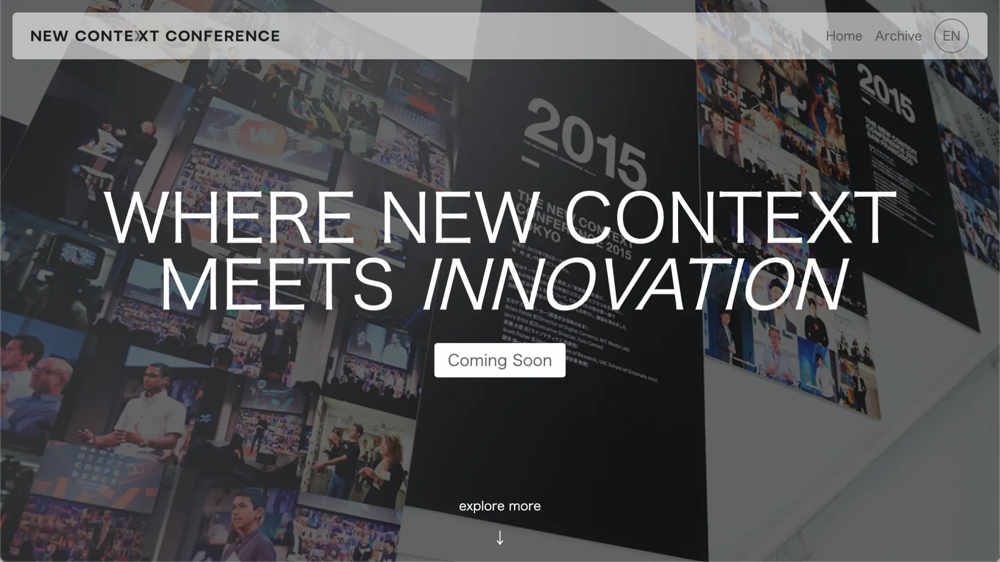
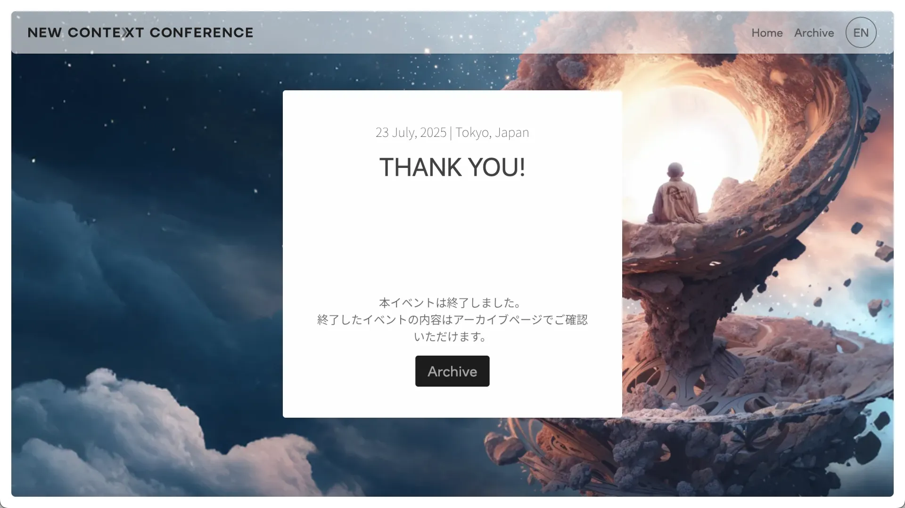
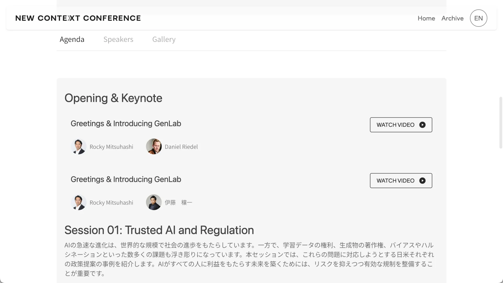
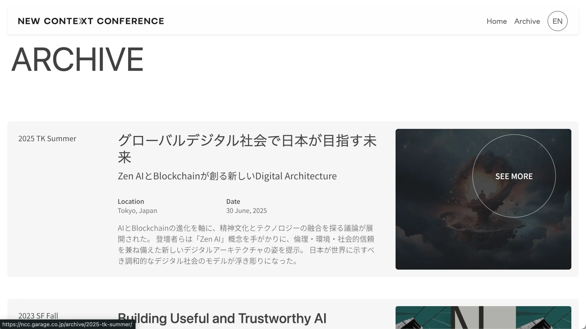

UI/UX Design & WordPress Architecture
New Context Conference, NCC is a conference organized by DG Garage. It is hosted in Tokyo and San Francisco annually. For this project, I led the UI/UX design and developed a custom WordPress system to support multi-year event publishing and structured content presentation.
The platform now supports multiple NCC editions within a single scalable structure. Content can be updated and published internally without developer involvement. Speaker and session information is presented clearly despite high content density. The site maintains stable performance across devices, including mobile-heavy traffic.


